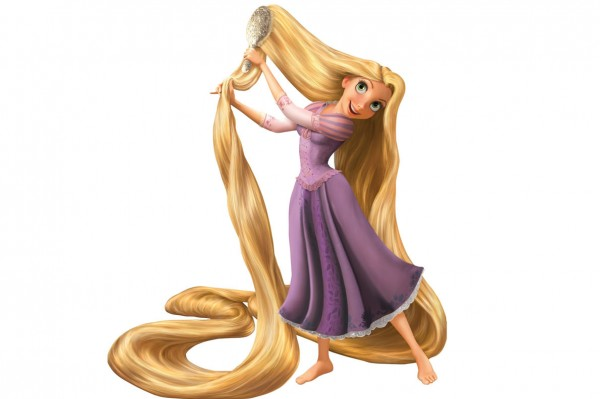

Personagem principal
Rapunzel
Idade 18 anos
Sexo Feminino
Cor dos olhos verdes
Cor do cabelo loiro
Cidade natal desconhecida
seu objetivo e saber sua origem de criança
quando seu cabelo começa a brilhar ela tem o poder de curar
Personagem principal
Flynn Rider
Idade 26 anos
Sexo Masculino
Cor dos Olhos Castanhos
Cor do Cabelo Castanho Escuro
Cidade Natal Desconhecida
Destino Ter muito dinheiro (anteriormente), libertar Rapunzel de Gothel, casar com Rapunzel
Odeia Seu nariz desenhado errado, sua reputação arruinada, Gothel aprisionando Rapunzel
Voz nos Estados Unidos Zachary Levi
Voz no Brasil Luciano Huck (1ª voz)
Raphael Rossatto (2ª voz)
Personagem principal
Mae Gothel

Idade 80-90 anos (verdadeiro)
20-30 (falso)
Sexo Feminino
Cidade Natal Desconhecida
Ocupações Guardiã de Rapunzel
Objetivo Para manter Rapunzel na torre a todo custo, manter-se jovem e bonita para sempre, para ferir qualquer um que tentar manter o poder de cura de Rapunzel longe dela
Casa Torre de Rapunzel
Família desconhecida
Gosta Usar o poder da flor para se manter jovem e bonita
Voz nos Estados Unidos Donna Murphy
Voz no Brasil Gottsha